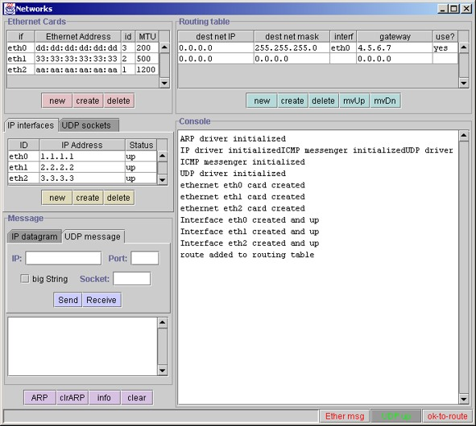

Professor: Dr. Chu, Bill
Semester: 2000 Spring
Grade: A
Project: Simulation of TCP/IP stack.
Project files:
The files are 'jar'ed. Please do NOT use any source from this project in your project.
To run the program: java -classpath csci6166classes.jar csci6166.ui.Ip
Screen shot:

Comment: The project was very exciting and challenging.